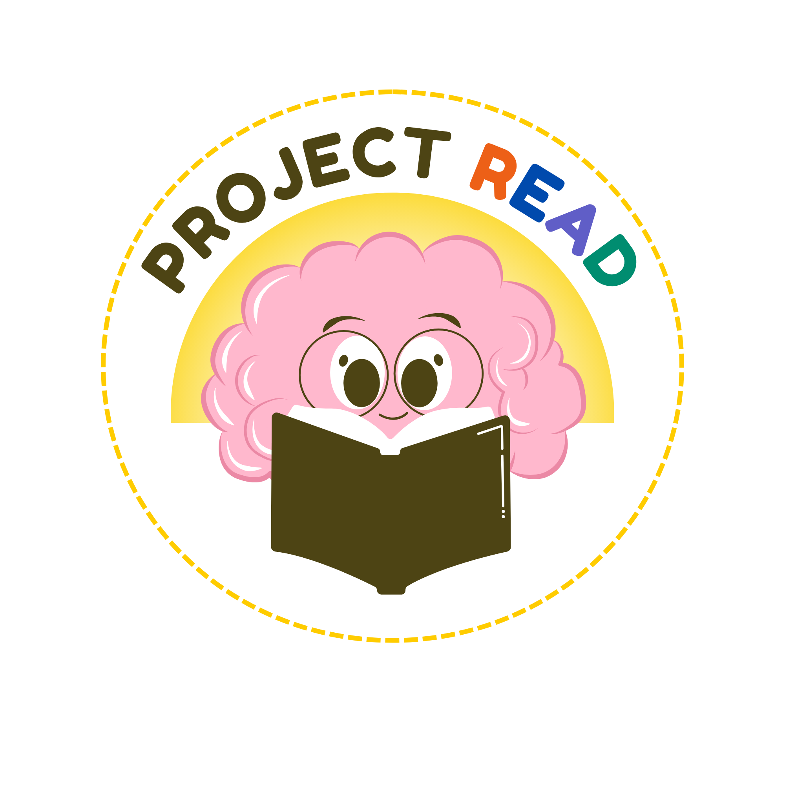

June 1, 2026
Project READ Approved by GSU IRB
Our Project READ: Receptive and Expressive Assessment of Narrative Discourse in Autism has been officially approved by GSU IRB! We are recruiting autistic children between 5 and 8 years old to participate in a remote study on language and literacy development. Feel free to let us know if you want to learn more about the study at asdlab@gsu.edu. Please fill out our screener if you are interested in participating: Project READ Screener Form.